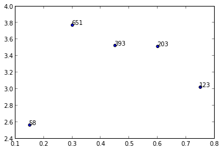

Scatter plot with different text at each data point
I am trying to make a scatter plot and annotate data points with different
numbers from a list. So, for example, I want to plot y vs x and annotate
with corresponding numbers from n.
y = [2.56422, 3.77284, 3.52623, 3.51468, 3.02199] z = [0.15, 0.3, 0.45, 0.6, 0.75] n = [58, 651, 393, 203, 123] ax = fig.add_subplot(111) ax1.scatter(z, y, fmt='o')
Any ideas?
Answer
I'm not aware of any plotting method which takes arrays or lists but you could
use annotate() while iterating over the values in n.
import matplotlib.pyplot as plt y = [2.56422, 3.77284, 3.52623, 3.51468, 3.02199] z = [0.15, 0.3, 0.45, 0.6, 0.75] n = [58, 651, 393, 203, 123] fig, ax = plt.subplots() ax.scatter(z, y) for i, txt in enumerate(n): ax.annotate(txt, (z[i], y[i]))
There are a lot of formatting options for annotate(), see the matplotlib
website:

Suggest
In case anyone is trying to apply the above solutions to a .scatter()
instead of a .subplot(),
I tried running the following code
import matplotlib.pyplot as plt y = [2.56422, 3.77284, 3.52623, 3.51468, 3.02199] z = [0.15, 0.3, 0.45, 0.6, 0.75] n = [58, 651, 393, 203, 123] fig, ax = plt.scatter(z, y) for i, txt in enumerate(n): ax.annotate(txt, (z[i], y[i]))
But ran into errors stating "cannot unpack non-iterable PathCollection object", with the error specifically pointing at codeline fig, ax = plt.scatter(z, y)
I eventually solved the error using the following code
import matplotlib.pyplot as plt plt.scatter(z, y) for i, txt in enumerate(n): plt.annotate(txt, (z[i], y[i]))
I didn't expect there to be a difference between .scatter() and .subplot()
I should have known better.